Welcome to the Aerosol Group within the Department of Marine Earth and Atmospheric
Sciences
(MEAS)
at NC State University. We study the physcical and chemical properties of
particles between 0.01 and 10 µm with a focus on understanding
phase transitions.
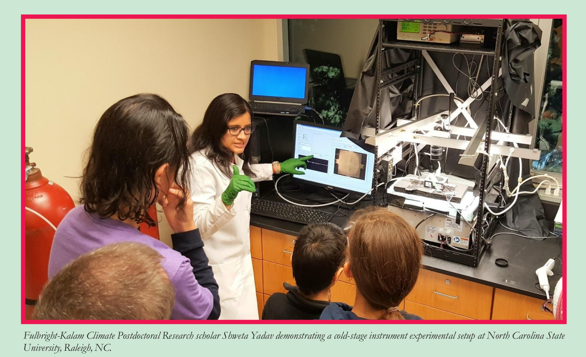
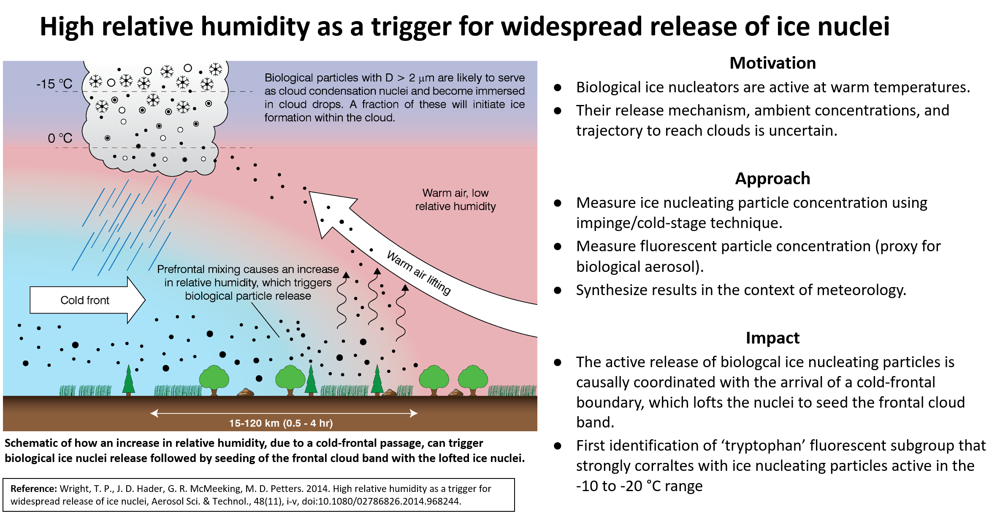
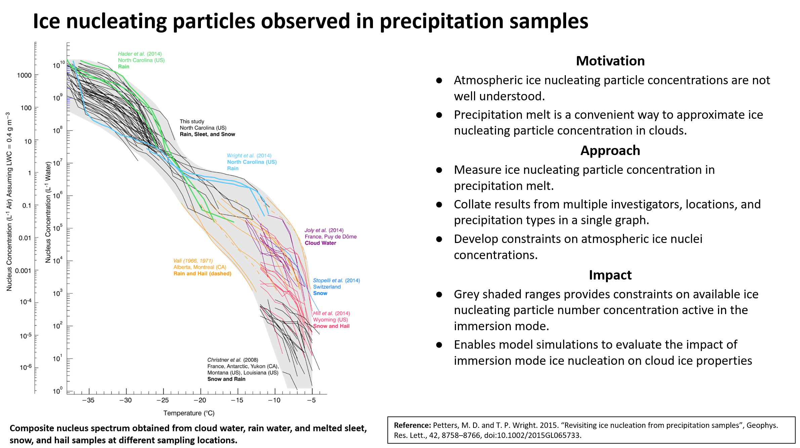
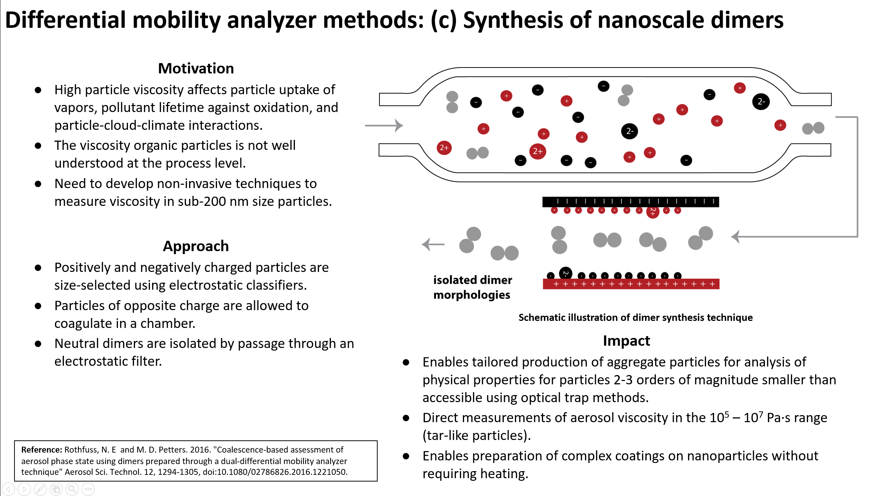
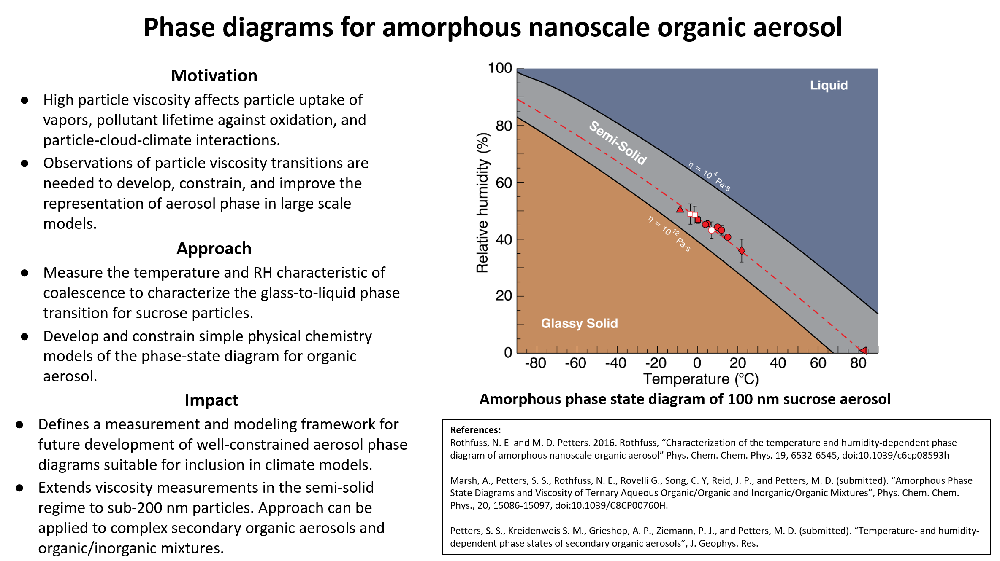
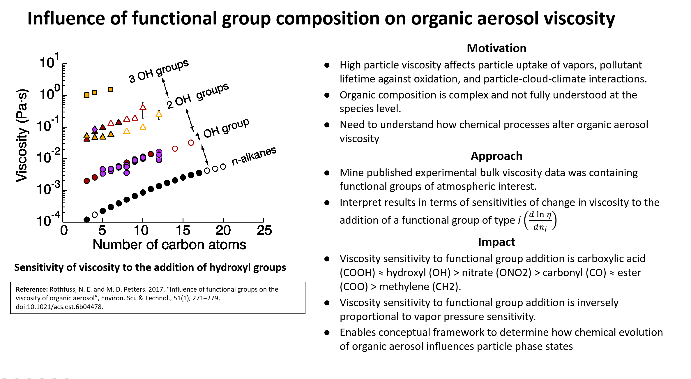
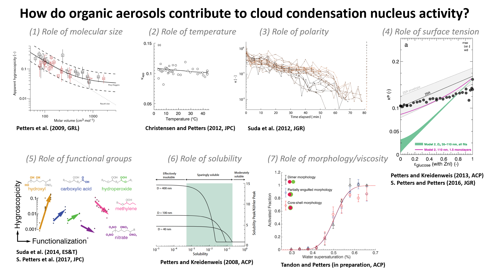
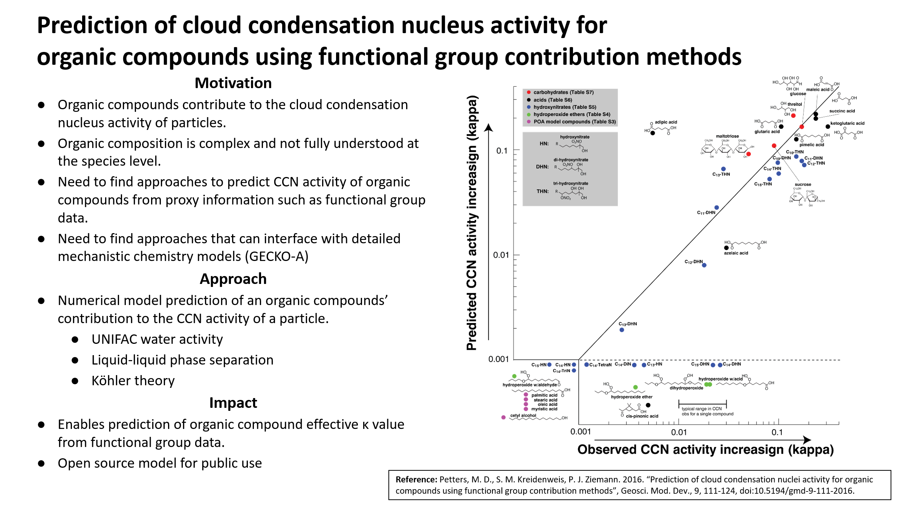
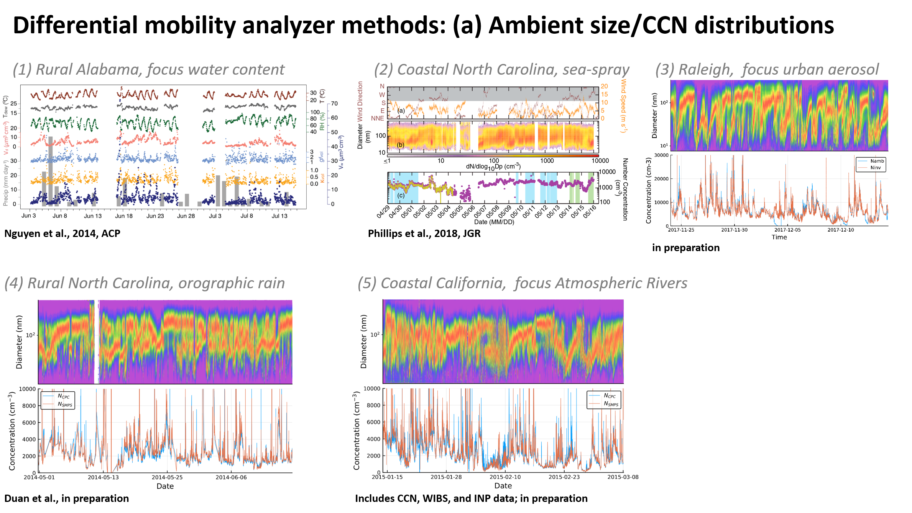
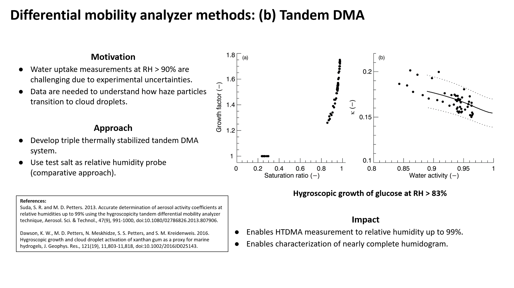
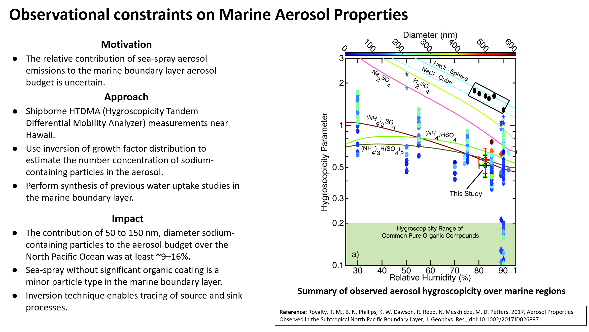
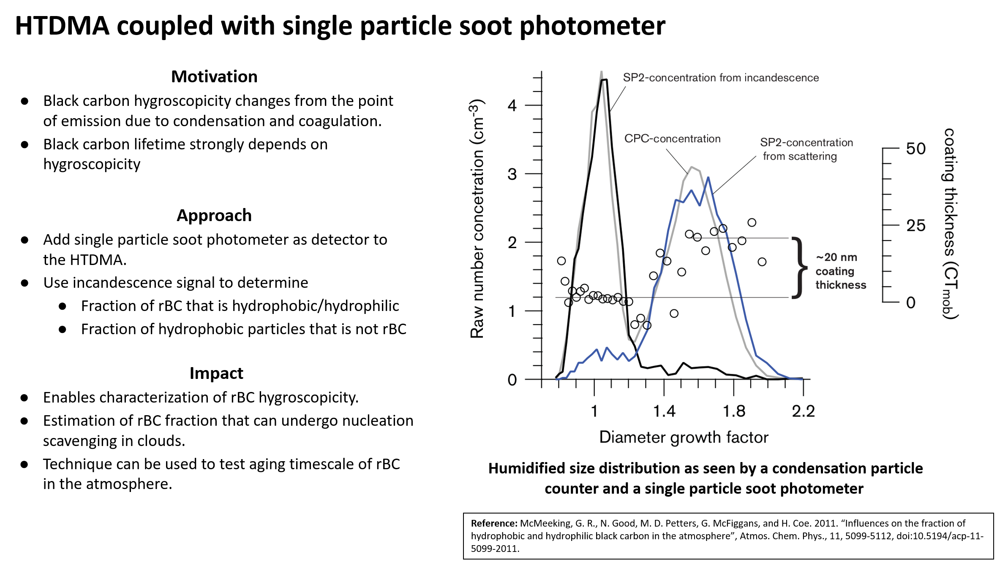
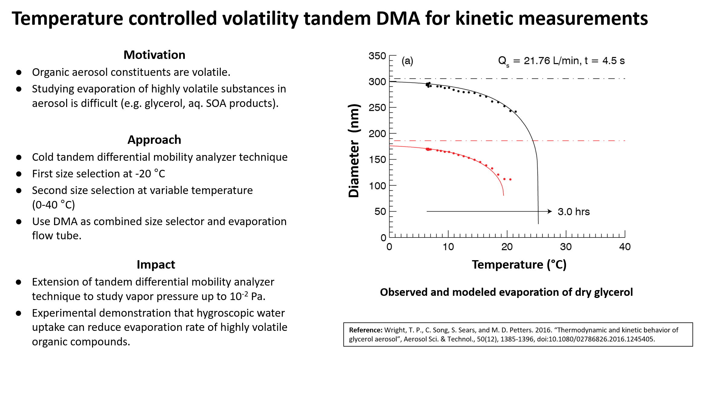
❮
❯
Interested in joining? Contact:
Markus Petters:
Email
GitHub
Google Scholar
NC State